⋆⁺₊⋆ ☁︎ About Me
I like playing and having fun and also having a ball and sometimes i play games with my friends and we play together and play video games and sometimes not video games sometimes we play music for each vother and then we torture each other because it is fun to play and also torture with friends
⋆⁺₊⋆ ☁︎ Course Work


Dysphoria (2025)
We were essentially given free reign to have our projects be about whatever we wanted, so I wanted to make something a bit more self-indulgent. I experimented with screenprinting on stretch fabric since I had no idea how the paint would react to being stretched out. I was hoping it'd get brittle and break apart, but it instead stretched with the fabric. Slightly disappointing, but it still looked kind of cool. The final project is a rudimentary paper doll (chipboard doll??) where you could grab his arms and participate in stretching his skin.
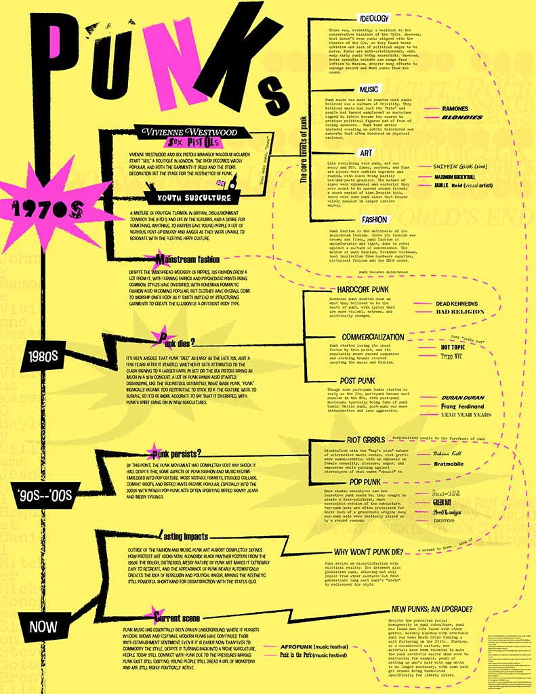
Punk History (2025)
I've dabbled in a few alternative subcultures, but I knew very little about punk culture and history going into this project. Fortunately, this project had more to do with hierarchy of information and organizing data in a way that's intuitive and easy to follow. Unfortunately, I also have little experience with that, as well.
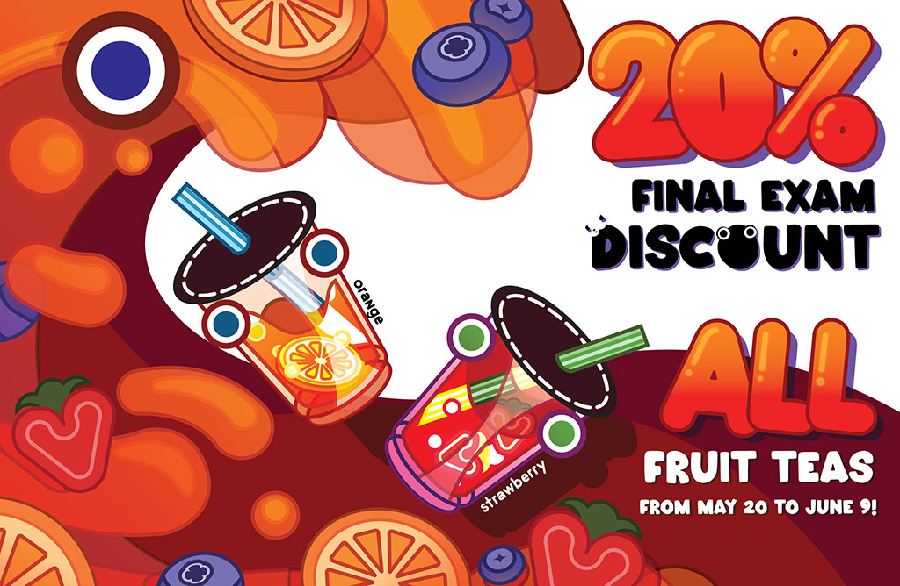
Discount! Discount! Buy! Buy! (2024)
I was practicing branding for this project and keeping stylistically in line with some icons I'd already designed earlier. In hindsight, I definitely could have strengthened some of the visual language; it's cute, but I struggle to think it stands out from other brands. I think that's in part due to how cluttered and complex the poster ended up being.
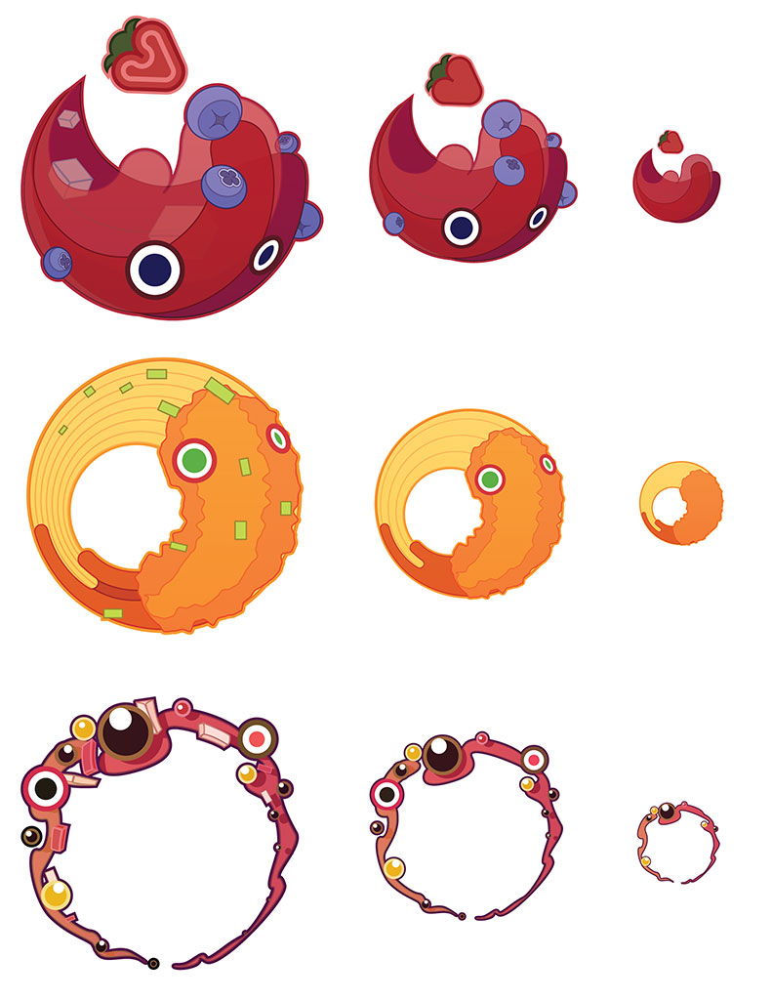
Fruit Tea, Food, and Boba Logos (2024)
Logos that are meant to be part of the same branding as the poster. Again, the visual complexity is way too much, and the colors don't intuitively tell customers what the category is. They're really cute, and I will definitely be using circles to construct icons moving forward, but this was way too much effort to essentially communicate less information. Not sure how I'd improve this, though.
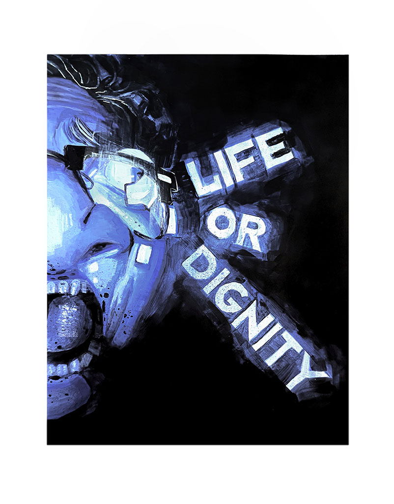
Gag Order (2024)
The prompt for this one had something to do with journalism. I think if I were to do this again, I'd make it a point to have the face resemble someone in particular, but I'm still pretty happy with this piece. In an uncharactistic show of restraint, the composition was pretty simple, allowing me to focus on the values and sense of claustrophobia. This was also the first time I used acrylic medium. It leaves a weird, shiny sheen, but it worked amazingly as a pseudo-glaze.
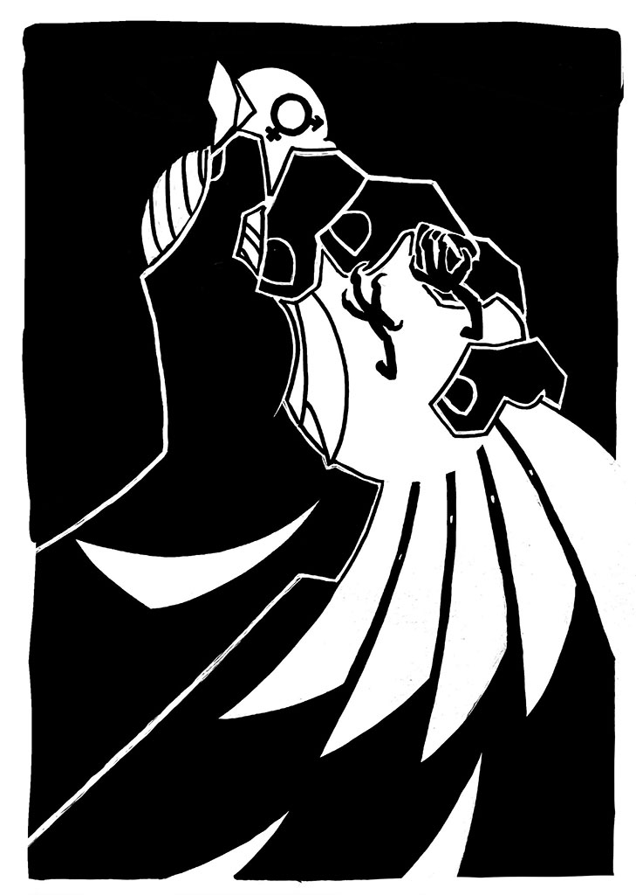
Clipped Wings
This originally had text, but I didn't like it very much, so I've cut it out. At this point in time, I was really scared of doing anything too "provocative" and turning it in as an assignment (what I thought the point of provocative art was at the time is beyond me), so I think I'd definitely go further on brutal imagery now, though I think the dove's despair is still evident.
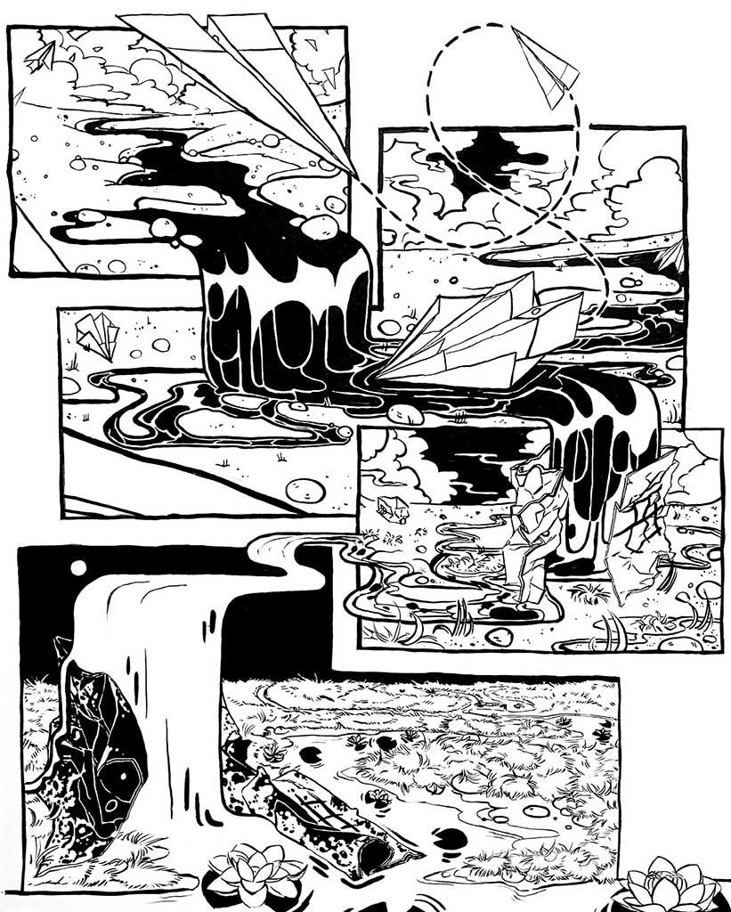
Home (2023--4)
This was the most time and attention I'd ever put in painting, and I think that visually, it was well worth the effort. The prompt was to construct a house in 4 panels, so naturally, I avoided drawing a literal construction of a house at all costs. What I ended up making was a bit of a cynical take on immigration and something that frustrated me about a lot of immigrants: in an attempt to assimilate to another culture, we sometimes adopt and amplify the rot that was always there. Specifically, a lot of my peers, who are first- or second-generation immigrants, try to outracism and outxenophobia racists and xenophobes to try to prove our American-ness, which is super weird and embarrassing (and a whole other list of words I won't use for now). In having our little paper airplanes land in water and in refusing to move somewhere our airplanes can thrive in, we let the rot fester until our homes decay away.
.
I don't know. I think what I actually ended up drawing might be a bit too abstract for any of that meaning to come through; I struggled a lot with taking the paper shape too literally, so I was too preoccupied with the shape of the house literally being replicatable on a piece of paper. This meant I couldn't communicate "house" as well as I wanted to. Still, I think this piece holds up on a technical level.
.jpg)
Wim Crouwel (2023)
Pretty good practice using the live paint tool on Adobe Illustrator. I tried integrating the grid system and use of geometric shapes Crouwel was known for.
⋆⁺₊⋆ ☁︎ Personal Art
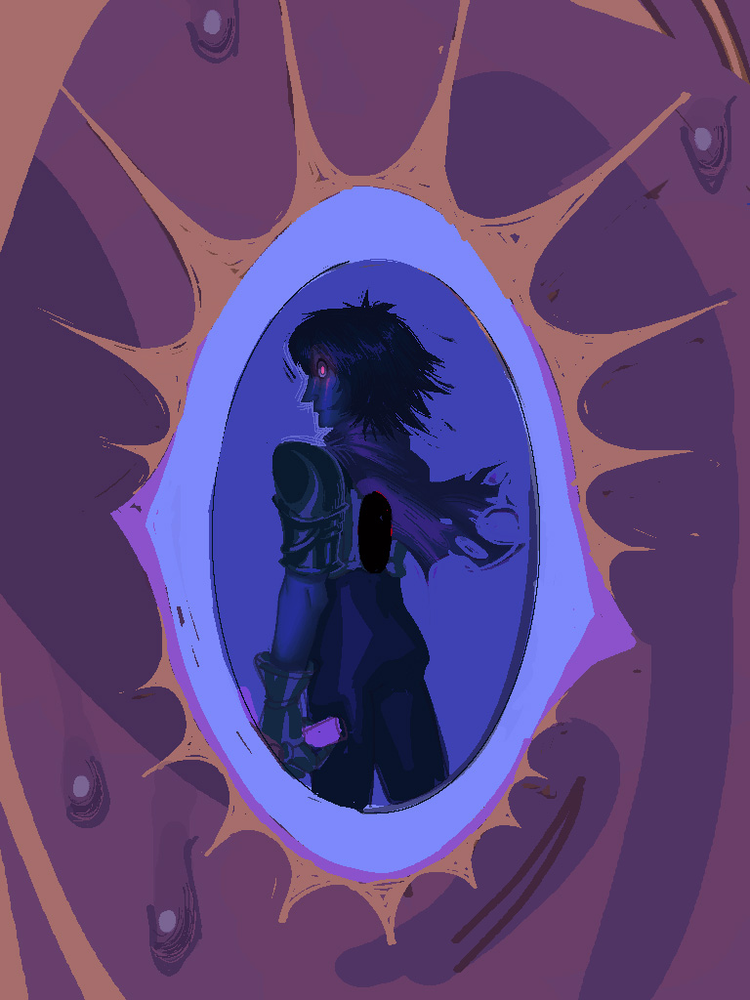
"You Couldn't Find..."
uhhhhhhh i like deltarune yes this is sitll a wip i didnt feel like working on it
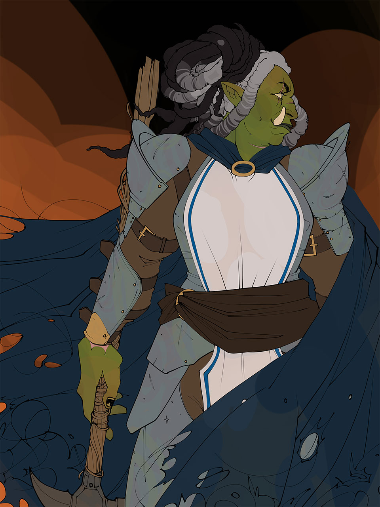
Cask
art i started a while ago of one of my friend's characters they're writing for a comic
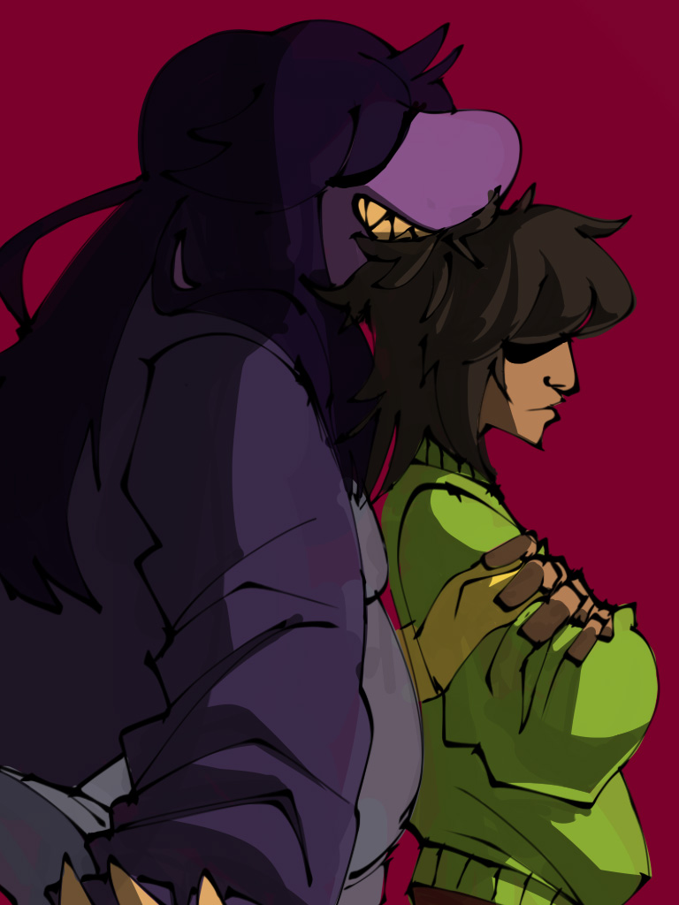
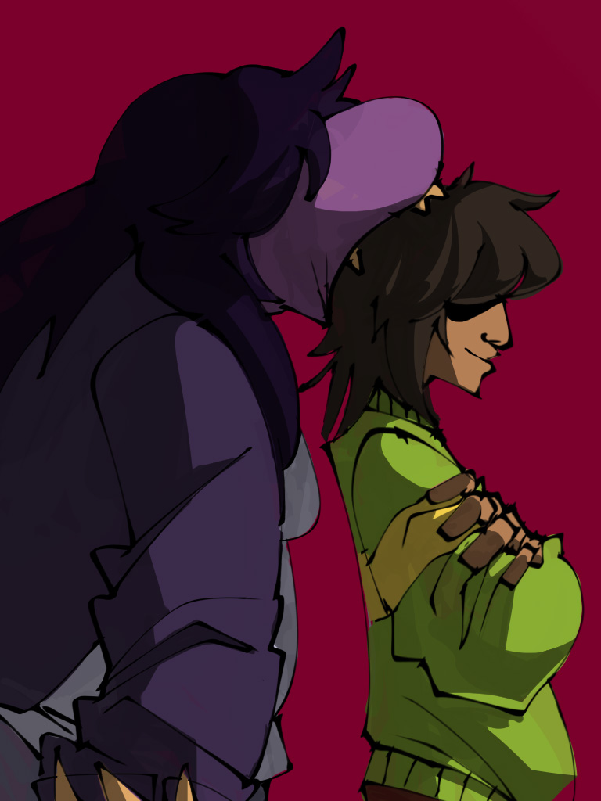
hurgnry
quick doodle of snoosie and kris can you tell i like deltarune
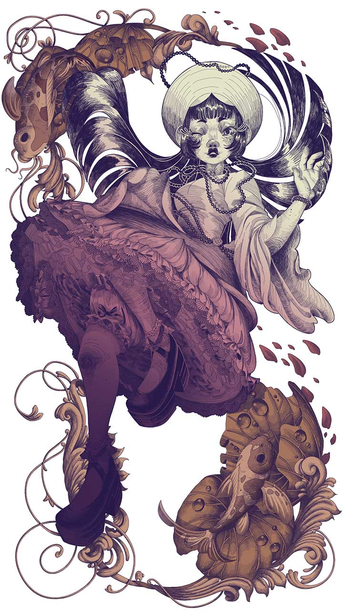
GRADUATION YAYYYYY
first time i had a dress made for me (i uhh tried to make it myself but it turns out i cannot sew) for graduation so i tried to draw it too
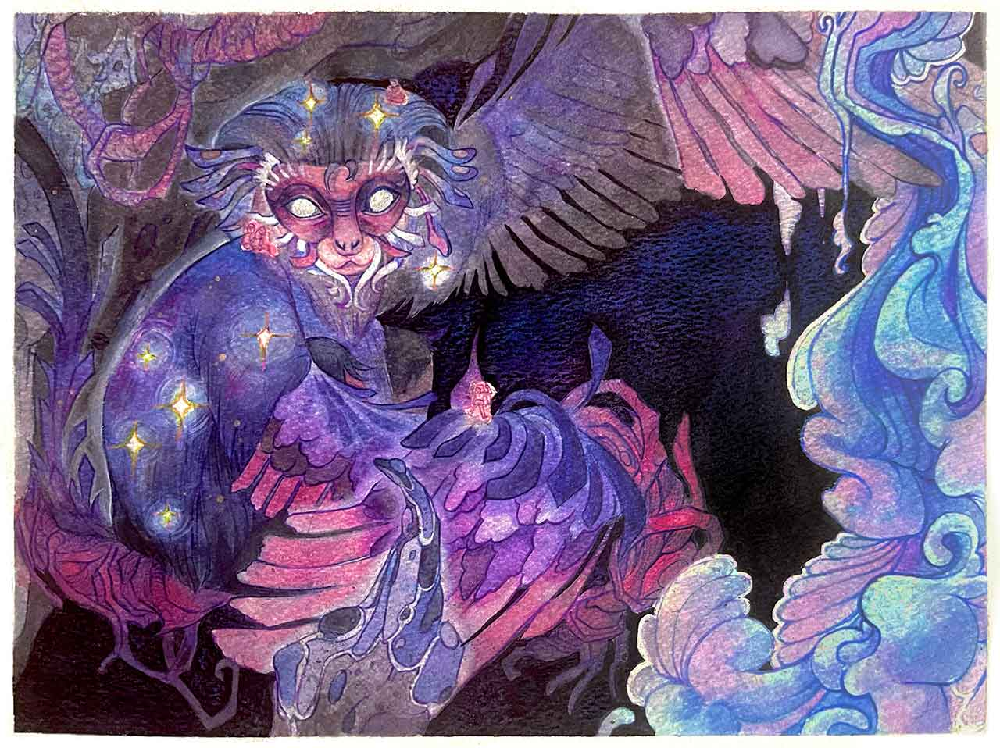
moenkey
painting i made for my mom's birthday because uhhh she's born year of the monkey. i picked a monkey species native to vietnam (technically more of its territory is in north vietnam/china but shhh)
⋆⁺₊⋆ ☁︎ Contact Me
Email: tranemily079@gmail.com
Instagram: @noodlecannibal